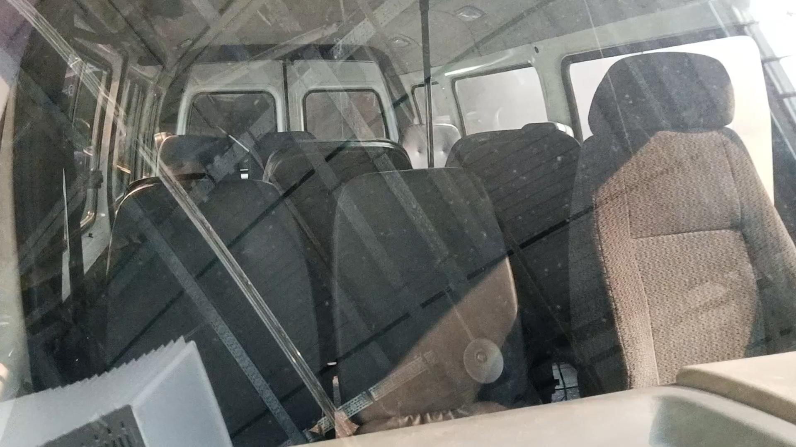
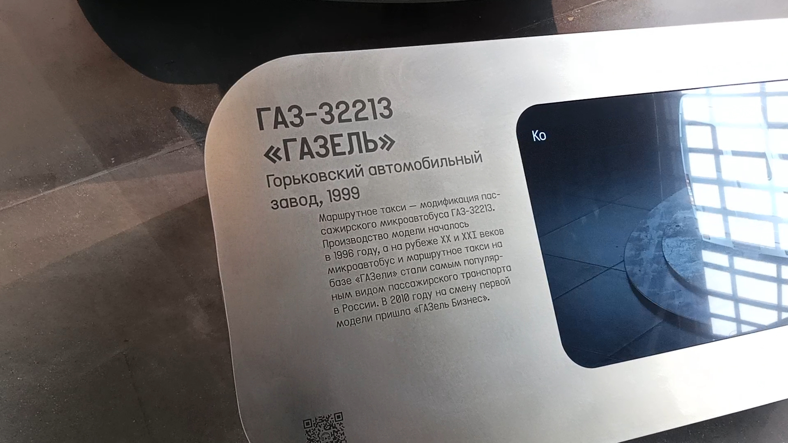

ГАЗ-32213 «ГАЗель»
ГАЗ-32213 «ГАЗель» — российский микроавтобус, выпускавшийся Горьковским автомобильным заводом с 1996 по 2010 год. Самая популярная маршрутка России 1990-х и 2000-х годов.
Маршрутки помогли пережить транспортный кризис второй половины 1990-х и начала 2000-х годов, предлагая быструю и относительно комфортную альтернативу городскому транспорту. ГАЗ сумел пережить 1990-е годы именно благодаря «ГАЗели».
Общая информация
🏭 Производство
Завод-изготовитель: Горьковский автомобильный завод (ГАЗ)
Годы выпуска: 1996–2010
Всего версий: до 60 различных модификаций
Преемник: «ГАЗель-Бизнес», «ГАЗель Next»
📍 Эксплуатация
Основной регион: все города России и ближнего зарубежья
В Москве: массово до 2016 года (реформа перевозчиков)
Сейчас: используются как корпоративный транспорт
Судьба в Москве: вытеснены реформой 2016 года
⭐ Спаситель ГАЗа: Сейчас сложно поверить, но Горьковский автомобильный завод сумел пережить 1990-е годы именно благодаря «ГАЗели». В поздние советские годы со скептицизмом смотрели на перспективы разработки очередной «полуторки» — зачем разрабатывать небольшой грузовик, если объёмы производства только увеличиваются? Однако народному хозяйству не хватало малотоннажных грузовиков, и проектированием такой модели ещё с конца 1970-х годов занимался московский институт НАМИ. ГАЗ сумел создать собственную модель и наладить её производство.
Технические характеристики
Основные параметры
Длина: 5,5 м
Ширина: 2,075 м
Высота: 2,2 м
Снаряжённая масса: 2 240–2 340 кг
Максимальная скорость: 115–120 км/ч
Пассажирских мест: 13
Силовая установка
Двигатель: ЗМЗ-4063 (бензиновый)
Цилиндры: 4, рядный
Объём: 2,3–2,9 л
Мощность: 98–110 л.с.
КПП: 5-ступенчатая механическая
Привод: задний
История
Предыстория
Народному хозяйству СССР не хватало малотоннажных грузовиков. Проектированием такой модели ещё с конца 1970-х годов занимался московский институт НАМИ, но разработка так и не дошла до крупного серийного производства. Разработка «ГАЗели» началась в 1988 году, планировалось выпустить целое семейство машин.
Первые грузовые «ГАЗели»
В 1994 году появились первые грузовые «ГАЗели» — бортовая модель ГАЗ-3302. Именно с началом разработки новой «полуторки» ГАЗ спустя полвека вернулся к тому же классу машин, с которого начинал свою деятельность в 1932 году. При конструировании достигли существенной унификации деталей с автомобилем ГАЗ-31029 «Волга»: общими были двигатель, коробка передач и некоторые другие элементы.
Первые микроавтобусы
Весной 1996 года на улицы России выехали первые микроавтобусы, которые быстро заменили собой автомобили РАФ. Выпуск заводской 8-местной «ГАЗели» модели 3221 стартовал в 1996 году, и практически сразу же выпустили модификацию 32213 с 13-местным салоном, упрощённой обшивкой интерьера и дополнительными поручнями в салоне.
Бум маршруток
После запуска в серию заводского цельнометаллического фургона модели 2705 расцвёл бизнес по переделке этих грузовых машин в пассажирские маршрутки. Смысл трансформации заключался в меньшей стоимости такой машины, кроме того, с помощью такой переделки можно было получить автобус немного большей вместимости — на 14–15 мест. А отдельные компании предлагали и более радикальный вариант увеличения вместимости, растягивая машину на одну секцию — в неё могло поместиться уже до 20 человек.
Борьба за безопасность
Низкая стоимость и широкое предложение привели к тому, что количество «неофициальных» автобусов «ГАЗель» в роли маршруток стало подавляющим. Череда громких аварий больше всего отразилась на репутации самого ГАЗа, и с начала 2000-х годов он фактически объявил войну сторонним фирмам. На ГАЗ-322132 внедрили усиленные крепления сидений, задние ряды устанавливали параллельно бортам, чтобы не загораживать проход к торцевой двери. С июля 2003 года появилась яркая жёлтая окраска маршрутных автобусов, а с 2005 года в стандартное оснащение добавили АБС.
Конец первого поколения
В 2010 году «ГАЗели» первого поколения исчезли из заводской программы ГАЗа. Взамен на конвейер встали их усовершенствованные аналоги под маркой «ГАЗель-Бизнес». Внешне они сохраняли схожесть с прежней моделью, но в рамках модернизации было внесено более 130 усовершенствований. В конструкции использовалось множество узлов от западных фирм, начиная с дизеля Cummins и заканчивая сцеплением Sachs.
Уход из Москвы
Маршрутки ГАЗ-322132 можно было массово встретить в Москве до 2016 года, когда произошла реформа частных пассажирских перевозчиков. Она включала обновление автопарка и новые условия работы в городе, которым «ГАЗель» не соответствовала. Сейчас встретить микроавтобусы семейства ГАЗ-3221 гораздо сложнее — их используют только в качестве корпоративного транспорта.
Интересный факт: Спасая российские города 1990–2000-х годов от катастрофического дефицита общественного транспорта, «ГАЗель» заставляла мириться с её врождёнными недостатками. В стандартном салоне пассажирской версии было тесно, душно и неуютно. Не слишком удачной оказалась конструкция сдвижной двери, заимствованная напрямую у грузового фургона. Проблема с низким потолком салона, заставлявшим пассажиров сгибаться, решалась ещё одним дополнением — высокой крышей, выполненной, как правило, из пластика.
Особенности конструкции
Унификация с «Волгой»
Двигатель, коробка передач и некоторые другие элементы были общими с автомобилем ГАЗ-31029 «Волга». Средства на разработку и запуск «ГАЗели» удалось заработать благодаря хорошим продажам и увеличению выпуска тех же «Волг».
Дизайн кабины
Во многом успех новому семейству подарила самая отличная её часть — кабина, определившая уникальный для отечественной промышленности внешний вид. Скошенный капот, округлые формы, большое лобовое стекло, маленькие колёса — всё это отсылало к современному европейскому автопрому.
Бескаркасная конструкция
Первые образцы микроавтобусов на шасси ГАЗ-3302, сделанные на Павловском автобусном заводе, имели каркасно-панельный кузов. Но к моменту начала серийного производства конструкцию полностью переработали, перейдя на применение бескаркасной конструкции и штампованных элементов.
Проблемы и недостатки
В стандартном салоне пассажирской версии было тесно, душно и неуютно. Сдвижная дверь, заимствованная у грузового фургона, требовала постоянного ремонта. Низкий потолок заставлял пассажиров сгибаться. Отдельные фирмы, а позже и сам ГАЗ, стали предлагать улучшенные версии маршрутки с обычной распашной дверью и высокой крышей из пластика.
🎉 Символ эпохи: «ГАЗель» стала символом новой России, рабочей лошадкой нарождающегося частного бизнеса. Фраза «передайте за проезд» вошла в историю вместе с ней. Маршрутки ГАЗ-322132 можно было массово встретить в Москве до 2016 года, когда произошла реформа частных пассажирских перевозчиков. Сейчас сложно поверить, но нет на карте Москвы места, куда невозможно было добраться с помощью маршрутки «ГАЗель».
Фотогалерея

📸 pfandrom

📸 pfandrom

📸 pfandrom
Нажмите на фото для увеличения
«Пожалуй, нет на карте Москвы места, куда невозможно было добраться с помощью маршрутки "ГАЗель". Маршрутки помогли пережить транспортный кризис второй половины 1990-х и начала 2000-х годов, предлагая быструю, относительно комфортную, и самое главное — вынужденную альтернативу городскому транспорту».